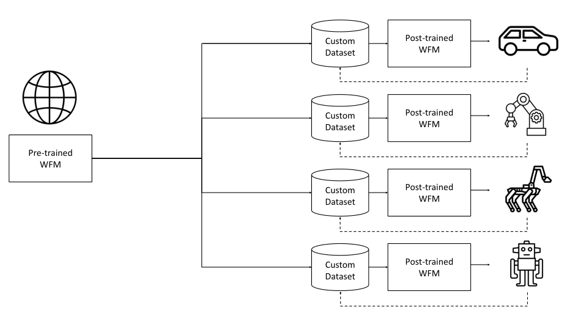
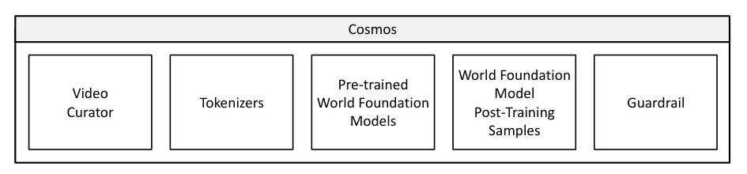
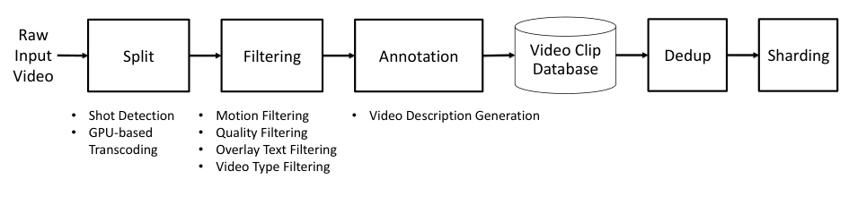
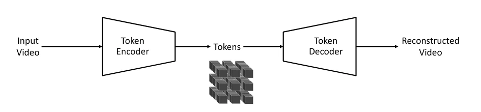
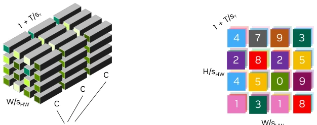
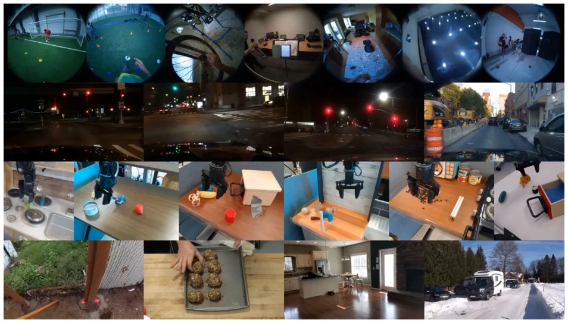
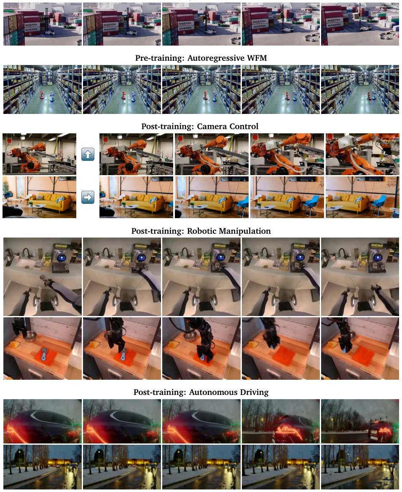
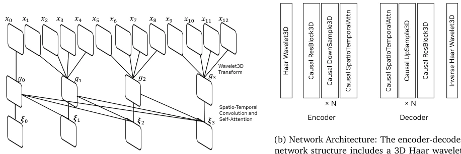
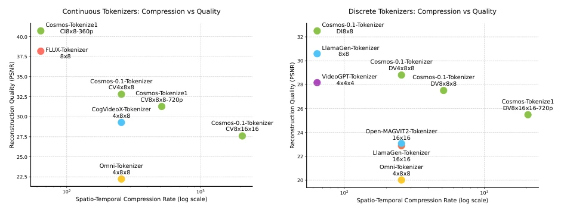
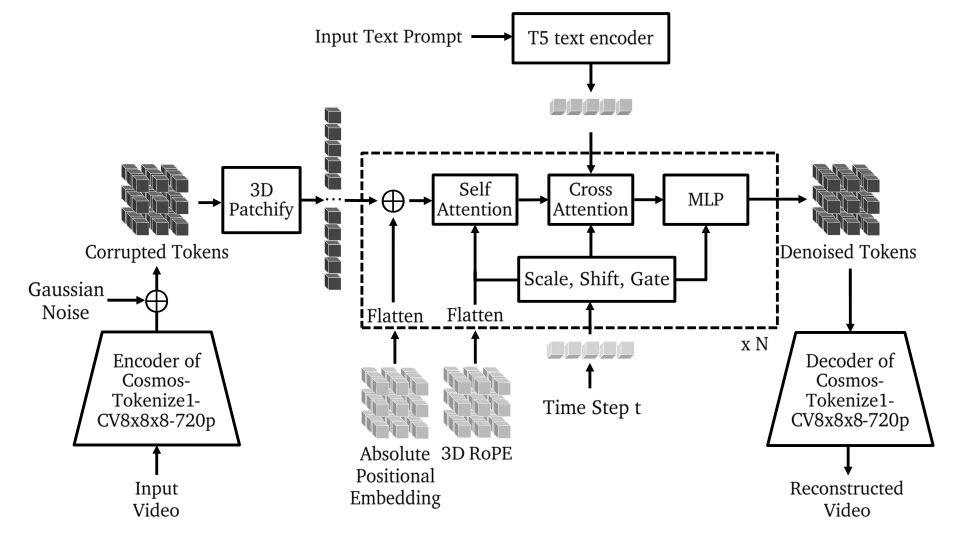

Cosmos World Foundation Model Platform for Physical AI
Nvidia Niket Agarwal, Arslan Ali, Maciej Bala, Yogesh Balaji, Erik Barker, Tiffany Cai abspdf
论文点评Review
英伟达这次又搞了个大平台，Cosmos 号称物理 AI 的世界基础模型平台。说白了就是给机器人造个“数字孪生”世界，省得真机试错炸了。数据清洗 pipeline 挺硬核，2000 万小时视频洗出 1 亿 clips，这工程量看着就头大。Tokenizer 搞了连续和离散两套，还加了因果性，算是跟上了 VLM 的潮流。不过，别指望它能直接替代物理仿真器，物理规律能不能学准还是玄学。开源权重是好事，但“世界模型”这词现在谁都能贴，真能模拟物理交互还是得看实测。Guardrail 系统倒是显得挺负责，毕竟 AI 乱动东西容易出事。总的来说，基建做得扎实，但“通用世界模型”这帽子戴得有点大，物理 AI 的 scaling law 还没完全跑通，毕竟物理世界比视频生成复杂多了。
Nvidia has launched another major platform this time, Cosmos claims to be a World Foundation Model platform for Physical AI. Simply put, it is about building a "digital twin" world for robots to avoid real machines failing or exploding during trial and error. The data cleaning pipeline is quite hardcore; 20 million hours of video are processed into 100 million clips, and this engineering workload looks daunting. The Tokenizer implements both continuous and discrete sets, and adds causality, keeping up with the VLM trend. However, do not expect it to directly replace physical simulators; whether physical laws can be learned accurately remains uncertain. Open weights are good, but the term "world model" can be slapped on by anyone now; whether it can truly simulate physical interaction depends on actual testing. The Guardrail system seems quite responsible, after all, AI messing with things easily causes accidents. Overall, the infrastructure is solid, but the hat of "general world model" is a bit too big; the scaling law for Physical AI hasn't been fully verified, after all, the physical world is much more complex than video generation.
研究动机Motivation
物理 AI（Physical AI）需要传感器和执行器，但真实世界训练数据稀缺且危险。探索性动作可能导致系统损坏。现有 AI 领域靠数据规模扩展，但物理 AI 数据包含观测和动作的交错序列，难以获取。World Foundation Model (WFM) 作为物理世界的数字孪生，能安全交互，解决数据扩展问题。现有工作如 SemDeDup [1] 解决了数据去重，但缺乏针对物理 AI 的定制化平台。Cosmos 旨在提供预训练和微调范式，让开发者构建定制世界模型，用于策略评估、初始化和训练，解决物理 AI 数据瓶颈。
Physical AI requires sensors and actuators, but real-world training data is scarce and dangerous. Exploratory actions may lead to system damage. Existing AI fields rely on data scale expansion, but Physical AI data contains interleaved sequences of observations and actions, making it difficult to acquire. World Foundation Model (WFM) as a digital twin of the physical world can interact safely, solving the data scaling problem. Existing work such as SemDeDup [1] solves data deduplication, but lacks a customized platform for Physical AI. Cosmos aims to provide a pre-training and fine-tuning paradigm, allowing developers to build customized world models for strategy evaluation, initialization, and training, solving the Physical AI data bottleneck.

Figure 2: Pre-trained WFMs are world model generalists that are trained with large-scale, diverse video datasets capturing different aspects of real-world physics. These pre-trained world foundation models can be specialized to a target Physical AI setup through post-training. Usually, the datasets for post-training are “prompt”-video pairs collected from the target Physical AI setup. The prompt can be in the form of action commands, trajectory, instructions, etc. As the pre-trained WFM provides a great foundation, the dataset for post-training can be much smaller. This pre-training-and-post-training yields an efficient strategy for building a Physical AI system. In the figure, the dashed lines represent the data loop.

Figure 4: Cosmos World Foundation Model Platform consists of several major components: video curator, video tokenizer, pre-trained world foundation model, world foundation model post-training samples, and guardrail.
Overall adopts a "Pre-training + Post-training" paradigm. Data flow: 20M hours of video processed by Curator (Split, Filter, Annotate, Dedup, Shard). Tokenizer part: Designed causal encoder-decoder, uses wavelet transform for dimensionality reduction, supports continuous (vector) and discrete (integer) tokens, accommodating both images and videos. Encoder uses 3D convolution and self-attention, Decoder has a mirror structure. Wavelet transform used for dimensionality reduction, Causal design ensures temporal dependency. WFM part: Based on Transformer, exploring diffusion models and autoregressive models. Diffusion models use continuous tokens, autoregressive use discrete tokens. Pre-training divided into Text2World and Video2World. Post-training fine-tunes for specific tasks (e.g., camera control, robotic arms, autonomous driving). Guardrail system intercepts harmful input/output. In the specific architecture, Encoder uses 3D convolution and self-attention, Decoder has a mirror structure. Wavelet transform used for dimensionality reduction, Causal design ensures temporal dependency. LayerNorm prevents large values from appearing.

Figure 5: Cosmos Video Curator contains five major steps: 1) split, 2) filtering, 3) annotation, 4) dedup, and 5) sharding. The split step divides a long video into shots and transcribes them into clips. The filtering step removes clips that are of little value to world foundation model building. The annotation step adds a video description to each clip. The clips are then stored in a video clip database. To obtain the training dataset, one first performs semantic deduplication and then shards the video clips based on their resolutions and aspect ratios.

Figure 6: Video tokenization pipeline. An input video is encoded into tokens, which are usually much more compact than the input video. The decoder then reconstructs the input video from the tokens. Tokenizer training is about learning the encoder and decoder to maximally preserve the visual information in the tokens.

Figure 7: Visualization of continuous and discrete tokenizers. Tokens along spatial ( 𝐻 𝑠𝐻𝑊× 𝑊 𝑠𝐻𝑊) and temporal (1 + 𝑇

Figure 10: Example videos from TokenBench. This figure shows diverse examples, including egocentric, driving, robotic manipulation, and web videos.
实验Experiments
Tokenizer 在 DAVIS 等数据集上测试，PSNR 优于 FLUX, CogVideoX 等，压缩率与质量平衡好，1080p 编码速度快。WFM 展示生成视频质量，支持 3D 一致性。后训练展示相机控制、机械臂操作、自动驾驶场景，证明微调有效性。数据规模 100M clips。消融实验未详细列出，但强调了因果性和小波变换的作用。Guardrail 系统拦截有害输入输出。
Tokenizer tested on DAVIS and other datasets, PSNR superior to FLUX, CogVideoX, etc., good balance between compression rate and quality, 1080p encoding speed is fast. WFM demonstrates generated video quality, supports 3D consistency. Post-training demonstrates camera control, robotic arm operation, autonomous driving scenarios, proving fine-tuning effectiveness. Data scale 100M clips. Ablation experiments are not listed in detail, but emphasize the role of causality and wavelet transform. Guardrail system intercepts harmful input/output.

Figure 1: Cosmos World Foundation Models. Pre-trained Cosmos WFMs generate high-quality 3D consistent videos with accurate physics. The Cosmos suite of models includes both diffusion and autoregressive transformer models, which are trained using continuous and discrete latent representations of videos, respectively. Post- training these WFMs with specialized datasets enables them to be utilized in a wide range of Physical AI setups. Specifically, we present models with camera controllability, models capable of instruction-following for robotic manipulation, and models for autonomous driving scenarios. To check full videos and more video examples, please visit our website.

Figure 9: Overall Cosmos Tokenizer architecture illustrating the integration of temporal causality and an encoder-decoder structure. Temporal causality (left) processes sequential inputs, while the encoder-decoder (right) leverages wavelet transforms and causal operations to capture spatial and temporal dependencies in the data.
其他图片Other Figures

Figure 8: Comparison of continuous (left) and discrete (right) tokenizers in terms of spatio-temporal compression rate (log scale) versus reconstruction quality (PSNR). Each solid point represents a tokenizer configuration, illustrating the trade-off between compression rate and quality. Notably, our tokenizer demon- strates an excellent compression-quality trade-off, delivering superior quality even at higher compression rates compared to other methods. The evaluation was performed on the DAVIS dataset. We calculate the PSNR of image tokenizers on all the individual frames.

Figure 11: Overall architecture of Cosmos-Predict1 World Foundation Model. The model processes an input video through the encoder of the Cosmos-Tokenize1-CV8×8×8-720p to obtain latent representations, which are subsequently perturbed with Gaussian noise. These representations are then transformed using a 3D patchification process. In the latent space, the architecture applies repeated blocks of self-attention, cross- attention (integrating input text), and feed-forward MLP layers, modulated by adaptive layer normalization (scale, shift, gate) for a given time step 𝑡. The decoder of Cosmos-Tokenize1-CV8×8×8-720p reconstructs the final video output from the refined latent representation.